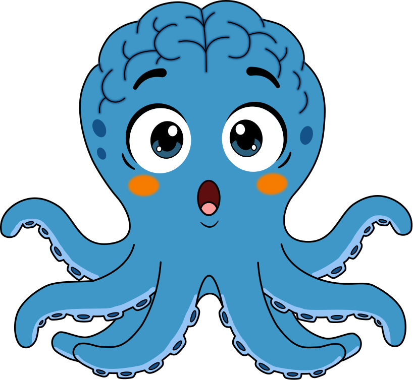

GIMNASIO DEL CEREBROInglés · Phonics · Sesión 2
Material del facilitador
Vowel Detectives
Sesión 2 · CVC con las 5 vocales cortas · 6 años · 60 minutos · Imprimir en A4

Objetivo: leer palabras CVC con a, e, i, o, u mezcladas, distinguiendo la vocal del medio. Requisito: 8 o más de 10 en el Quick Check de la sesión 1. Si sacó menos, mira el recuadro "Si la sesión 1 salió baja".
| Pág. | Material | Cómo prepararlo |
|---|
| 2 | Vowel cards (5) | Recorta. Cada vocal con su palabra clave y su gesto. Se usan en el Warm-up, en Vowel Freeze y como guía durante toda la sesión. |
| 3 | Letter cards nuevas (9) | Recorta y súmalas a las de la sesión 1. Trae h, r, l, j, k, w y una e, o, u extra. |
| 4 | Picture cards (8) | Recorta. Para Vowel Detective (oral). |
| 5 | Hoja del facilitador | Cadena de palabras, listas por actividad y frases de apoyo. No se recorta. |
| 6 y 7 | Vowel Houses + Word cards (15) | Imprime las casas sin recortar. Recorta las 15 palabras. |
| 8 y 9 | Quick Check 2 | La 8 la lee el estudiante. En la 9 anotas los resultados. |
| 10 | My Sentences | Dos oraciones para leer y dibujar. |
Ruta de la sesión
1 0 a 5 Vowel Warm-up 2 5 a 10 Review 3 10 a 20 Vowel Detective 4 20 a 32 Word Chain
5 32 a 37 Vowel Freeze 6 37 a 48 Vowel Houses 7 48 a 54 Quick Check 2 8 54 a 60 Sentences
Si la sesión 1 salió baja
- 5 a 7: usa solo a, i y o. Salta la página 3 y en Vowel Houses usa 3 casas.
- 0 a 4, o no une sonidos: no uses esta sesión todavía. Repite la sesión 1 empezando con oral blending y palabras de 2 sonidos.
Clave de la sesión: las vocales cortas e / i y o / u son las que más se confunden, sobre todo en hispanohablantes, porque el español no tiene la /ɪ/ ni la /ʌ/. Exagera la boca: e con sonrisa, i con boca pequeña, o redonda, u relajada como "uh".
Gimnasio del Cerebro · Rionegro, Antioquia01
GIMNASIO DEL CEREBROVowel cards
Warm-up · Vowel Freeze
Vowel Cards
Recorta. Cada vocal tiene una palabra clave y un gesto. Di la palabra, haz el gesto, di el sonido: "apple, apple, /a/".
a🍎apple
Gesto: morder una manzana
e🥚egg
Gesto: romper un huevo
i🐛insect
Gesto: dedos que caminan por el brazo
o
octopus
Gesto: mover los brazos como Oki
u☂️umbrella
Gesto: abrir un paraguas

"O is for octopus,
like Oki!"
Gimnasio del Cerebro · Vowel Detectives02
GIMNASIO DEL CEREBROLetter cards nuevas
Word Chain · Vowel Houses
Letter Cards · New Letters
Súmalas a las 18 de la sesión 1. Repasa sus sonidos en el Warm-up antes de usarlas.
Gimnasio del Cerebro · Vowel Detectives03
GIMNASIO DEL CEREBROVowel Detective
Oral · 10 a 20 min
Picture Cards · Vowel Detective
Di la palabra estirando la vocal: "beeed". El estudiante señala la vowel card que escuchó en el medio.
🛏️bed · e
🐶dog · o
☀️sun · u
🐖pig · i
🐈cat · a
🐔hen · e
🚌bus · u
🪵log · o
Gimnasio del Cerebro · Vowel Detectives04
GIMNASIO DEL CEREBROHoja del facilitador
We Do · 20 a 32 min
Word Chain · Vowel Swap
Cambia una sola letra cada vez (en naranja). Casi todos los cambios son de vocal: es el punto de la sesión.
bag → big →
bug → bud →
bed → bet →
net → not →
hot → hut
Review (5 a 10 min): sat, pin, fan, map, sit, nap
Palabras de la sesión 1. Si las lee rápido, sigue. Si duda, repasa con arm tapping.
Vowel Detective (oral): bed, dog, sun, pig, cat, hen, bus, log
"Listen: beeed. What's the middle sound? Show me the card!" Después cambien los papeles.
Vowel Freeze (pausa activa): pon música y bailen. Cuando pares, muestra una vowel card. El estudiante se congela, hace el gesto y dice el sonido.
Ronda difícil: muestra la vocal, él dice una palabra que la tenga.

Frases de apoyo
- "Be a vowel detective! What's the middle sound?"
- "Look at the vowel first. What does it say?"
- "Tap it, slide it, say it fast!"
- "Is it /e/ like egg or /i/ like insect? Show me your mouth."
- "Freeze! What sound is this?"
Si se traba en la vocal: tapa las consonantes y que diga solo la vocal. Luego destapa una por una: "e... be... bed". Si confunde e / i, pon las dos vowel cards juntas y exagera la forma de la boca.
Gimnasio del Cerebro · Vowel Detectives05
GIMNASIO DEL CEREBROVowel Houses
You Do · 37 a 48 min
Vowel Houses
El estudiante lee la palabra en voz alta y la lleva a la casa de su vocal. Primero lee, después ubica.
Gimnasio del Cerebro · Vowel Detectives06
GIMNASIO DEL CEREBROVowel Houses
You Do · 37 a 48 min
Word Cards · Vowel Houses
Recorta. Barájalas antes de empezar. Todas las letras van en el mismo color: aquí la vocal la tiene que encontrar él.
jam
hen
lip
dog
cup
rat
wet
kid
log
bus
bag
red
hit
pot
run
Gimnasio del Cerebro · Vowel Detectives07
GIMNASIO DEL CEREBROQuick Check 2 · hoja del niño
Evaluación · 48 a 54 min
Can you read these words?
Sin ayuda. Las dos últimas son "alien words": no existen, así que no se pueden adivinar.

1pet
2gum
3dot
4ham
5rib
6web
7mud
8sad
9fit
10rod
Gimnasio del Cerebro · Vowel Detectives08
GIMNASIO DEL CEREBROQuick Check 2 · hoja del facilitador
Evaluación
Quick Check 2 · Registro
Alumno: ____________________ Fecha: ____________________ Sesión #: ______
| # | Palabra | Vocal | ✓ Lee la palabra | Error en la vocal | Qué dijo |
|---|
| 1 | pet | e | | | |
| 2 | gum | u | | | |
| 3 | dot | o | | | |
| 4 | ham | a | | | |
| 5 | rib | i | | | |
| 6 | web | e | | | |
| 7 | mud | u | | | |
| 8 | sad | a | | | |
| 9 | fit | i | | | |
| 10 | rod | o | | | |
| Total palabras reales | ____ / 10 | ____ / 10 | |
| 11 | vop | o | | | |
| 12 | mib | i | | | |
Interpretación
- 8 a 10 y lee al menos 1 alien word: está decodificando, no memorizando. Siguiente paso: CVCC (hand, milk, jump).
- 8 a 10 pero no lee las alien words: puede estar reconociendo palabras de memoria. Repite esta sesión con otras palabras.
- 5 a 7: revisa la columna "Error en la vocal". Si los errores se concentran en dos vocales (típico: e / i), dedica la próxima sesión a ese contraste.
- 0 a 4: vuelve a la sesión 1 con a, i, o.
Observaciones (vocales que confunde, velocidad, qué lo motivó)
Gimnasio del Cerebro · Vowel Detectives09
GIMNASIO DEL CEREBROMy Sentences
Cierre · 54 a 60 min
My Sentences
Nombres con mayúscula: si no reconoce la B o la P, muéstrale que suenan igual que b y p. Al final, pega un sticker en su certificado.

Ben got a big bug.
Draw it!
Pam can hop on a log.
Draw it!
Gimnasio del Cerebro · Vowel Detectives10